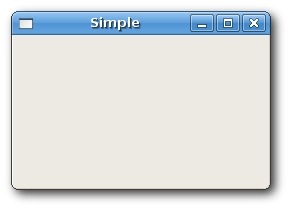
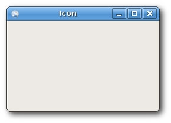
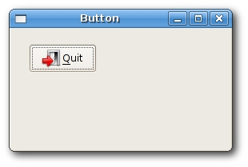

First programs in wxWidgets
In this chapter, we will cover the basics needed to create wxWidgets applications. We will create our first simple example, show how to display an icon. Next we will create a simple example demonstrating usage of an event. Finally, we will see, how widgets communicate in wxWidgets applications.
A simple application
First we create the very basic wxWidgets program.
simple.bmx <- Open sourceSuperStrict Framework wx.wxApp Import wx.wxFrame New MyApp.Run() Type MyApp Extends wxApp Method OnInit:Int() Local sim:Simple = Simple(New Simple.Create(Null, wxID_ANY, .. "Simple", -1, -1, 250, 150)) sim.Show(True) Return True End Method End Type Type Simple Extends wxFrame Method OnInit() Centre() End Method End Type
This very basic example shows a small window on the screen. The window is centered.
Centre()
This method centers the window on the screen. Both horizontally and vertically.
New MyApp.Run() Type MyApp Extends wxApp Method OnInit:Int() ... Return True End Method End Type
The wxApp type is the basic building block of a wxWidgets application. You implement a sub-type of wxApp and override the OnInit() method. Here you can initialize data, create windows, and perform any other startup routines for your application.
You return True from OnInit() to indicate that the application started successfully, in which case wxWidgets takes control and starts processing events. If you return False, the application will terminate.

Showing an application icon
In this example, we provide an icon for our application. It became a standard to display a small icon in the upper left corner of the window. The icon is a graphical identity of the program.
SuperStrict Framework wx.wxApp Import wx.wxFrame Import wx.wxImage New MyApp.Run() Type MyApp Extends wxApp Method OnInit:Int() wxImage.AddHandler( New wxPNGHandler ) Local ic:Icon = Icon(New Icon.Create(Null, wxID_ANY, .. "Icon", -1, -1, 250, 150)) ic.Show(True) Return True End Method End Type Type Icon Extends wxFrame Method OnInit() SetIcon(wxIcon.CreateFromFile("../media/world.png", wxBITMAP_TYPE_PNG)) Centre() End Method End Type
In our example we show a small web icon.
SetIcon(wxIcon.CreateFromFile("../media/world.png", wxBITMAP_TYPE_PNG))
To display an application icon is a matter of one code line.
wxImage.AddHandler( New wxPNGHandler )
AddHandler tells wxWidgets to enable certain kinds of image formats. In this case, PNG images.

A simple button
In the following example, we create a button on the frame widget. We will show, how to create a simple event handler.
SuperStrict Framework wx.wxApp Import wx.wxFrame Import wx.wxPanel Import wx.wxButton New MyApp.Run() Type MyApp Extends wxApp Method OnInit:Int() Local btn:Button = Button(New Button.Create(Null, wxID_ANY, .. "Button", -1, -1, 270, 150)) btn.Show(True) Return True End Method End Type Type Button Extends wxFrame Method OnInit() Local panel:wxPanel = New wxPanel.Create(Self, wxID_ANY) Local button:wxButton = New wxButton.Create(panel, wxID_EXIT, "Quit", 20, 20) Connect(wxID_EXIT, wxEVT_COMMAND_BUTTON_CLICKED, OnQuit) button.SetFocus() Centre() End Method Function OnQuit(event:wxEvent) wxWindow(event.parent).Close(True) End Function End Type
Local panel:wxPanel = New wxPanel.Create(Self, wxID_ANY)
First we create a wxPanel widget. It will be placed inside a wxFrame widget.
Local button:wxButton = New wxButton.Create(panel, wxID_EXIT, "Quit", 20, 20)
We create a wxButton widget. It is placed on the panel. We use the predefined wxID_EXIT id for the button. It will cause to display a small exit icon on the button (on Linux). The label of the button is "Quit". The button is positioned manually at x=20, y=20 coordinates. The beginning of the coordinate system is at the upper left hand corner.
Connect(wxID_EXIT, wxEVT_COMMAND_BUTTON_CLICKED, OnQuit)
If we click on the button, a wxEVT_COMMAND_BUTTON_CLICKED event is generated. We connect the event to the OnQuit() function of the Button type. So when we click on the button, the OnQuit() function is called.
button.SetFocus()
We set the keyboard focus to the button. So if we press the enter key, the button is being clicked.
wxWindow(event.parent).Close(True)
Inside the OnQuit() function, we call the Close() method. This will terminate our application.
The event.parent field holds the widget reference which raised the event. This gives us access to the widget methods.

Widgets communicate
It is important to know, how widgets can communicate in application. Follow the next example.
SuperStrict Framework wx.wxApp Import wx.wxFrame Import wx.wxPanel Import wx.wxButton Import wx.wxStaticText Const ID_PLUS:Int = 101 Const ID_MINUS:Int = 102 New MyApp.Run() Type MyApp Extends wxApp Method OnInit:Int() Local btn:Communicate = Communicate(New Communicate.Create(Null, wxID_ANY, .. "Widgets communicate", -1, -1, 290, 150)) btn.Show(True) Return True End Method End Type Type Communicate Extends wxFrame Field m_lp:LeftPanel Field m_rp:RightPanel Field m_parent:wxPanel Method OnInit() m_parent = New wxPanel.Create(Self, wxID_ANY) Local hbox:wxBoxSizer = New wxBoxSizer.Create(wxHORIZONTAL) m_lp = LeftPanel(New LeftPanel.Create(m_parent,,,,,,wxBORDER_SUNKEN)) m_rp = RightPanel(New RightPanel.Create(m_parent,,,,,,wxBORDER_SUNKEN)) hbox.Add(m_lp, 1, wxEXPAND | wxALL, 5) hbox.Add(m_rp, 1, wxEXPAND | wxALL, 5) m_parent.SetSizer(hbox) Centre() End Method Function OnQuit(event:wxEvent) wxWindow(event.parent).Close(True) End Function End Type Type LeftPanel Extends wxPanel Field m_plus:wxButton Field m_minus:wxButton Field m_parent:wxPanel Field count:Int Method OnInit() count = 0 m_parent = wxPanel(GetParent()) m_plus = New wxButton.Create(Self, ID_PLUS, "+", 10, 10) m_minus = New wxButton.Create(Self, ID_MINUS, "-", 10, 60) Connect(ID_PLUS, wxEVT_COMMAND_BUTTON_CLICKED, OnPlus) Connect(ID_MINUS, wxEVT_COMMAND_BUTTON_CLICKED, OnMinus) End Method Function OnPlus(event:wxEvent) Local panel:LeftPanel = LeftPanel(event.parent) panel.count:+ 1 Local comm:Communicate = Communicate(panel.m_parent.GetParent()) comm.m_rp.m_text.SetLabel(panel.count) End Function Function OnMinus(event:wxEvent) Local panel:LeftPanel = LeftPanel(event.parent) panel.count:- 1 Local comm:Communicate = Communicate(panel.m_parent.GetParent()) comm.m_rp.m_text.SetLabel(panel.count) End Function End Type Type RightPanel Extends wxPanel Field m_text:wxStaticText Method OnInit() m_text = New wxStaticText.Create(Self, -1, "0", 40, 60) End Method Function OnSetText(event:wxEvent) End Function End Type
In our example we have two panels. A left and right panel. The left panel has two buttons. The right panel has one static text. The buttons change the number displayed in the static text. The question is, how do we grab the reference to the static text?
m_parent = wxPanel(GetParent())
Here we save the reference to the parent widget of the LeftPanel. It is a wxPanel widget.
Local comm:Communicate = Communicate(panel.m_parent.GetParent()) comm.m_rp.m_text.SetLabel(panel.count)
These two lines are the most important lines of the example. It is shown, how we get access to the static text widget, which is placed on a different panel. First we get the parent of the both left and right panels. This parent widget has a reference to the right panel. And the right panel has a reference to the static text.